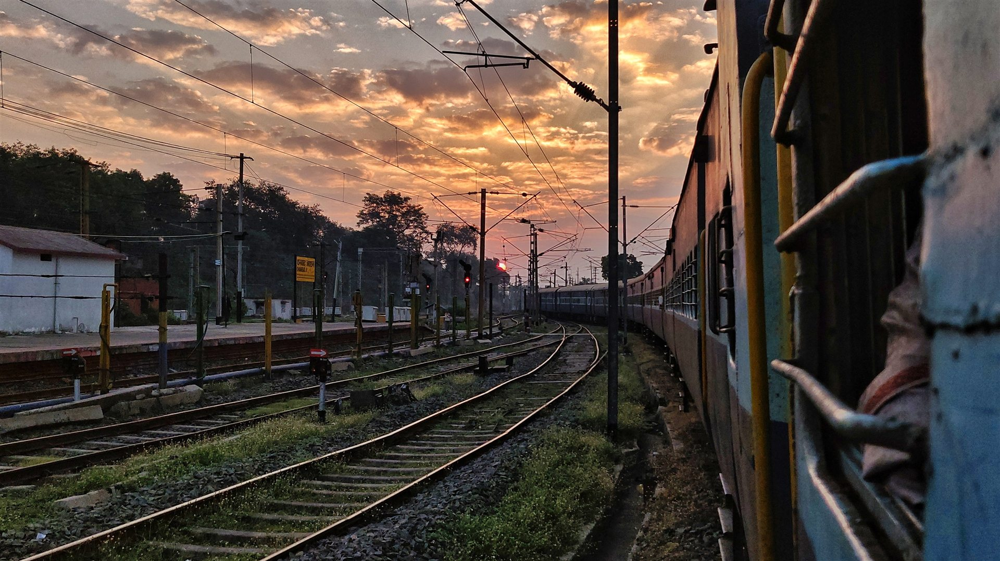
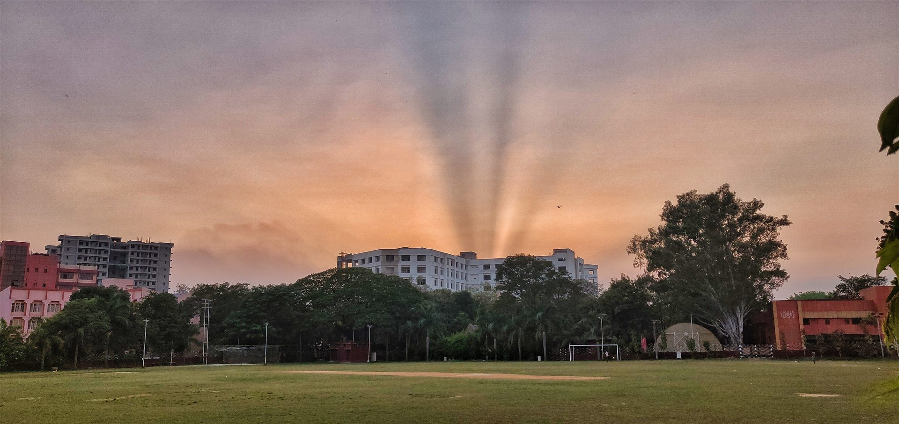

APPLIED CRYPTOGRAPHY · PHOTOGRAPHY · TRAVEL NOTES
I study security.
I notice the light.
I’m Siddhartha Siddhiprada Bhoi. My work is in applied cryptography; my camera keeps a record of the world beyond the page.


MORE THAN ONE SIDESCROLL TO EXPLORE ↓
A FEW WAYS TO KNOW ME
Different sides.
From cryptography to the
photos I bring back.
✳ Research notes, photographs, and journeys, each with a page of its own.
THE SHORT VERSION
A researcher’s mind.
A photographer’s eye.
I’m Siddhartha Siddhiprada Bhoi, an applied cryptographer and researcher. Alongside my research, photography, writing, and music each have a place in my life.
Google ScholarYOUR TURN
Found a thread
in common?
For research, collaboration, or a conversation, connect with me on LinkedIn.
Connect on LinkedIn